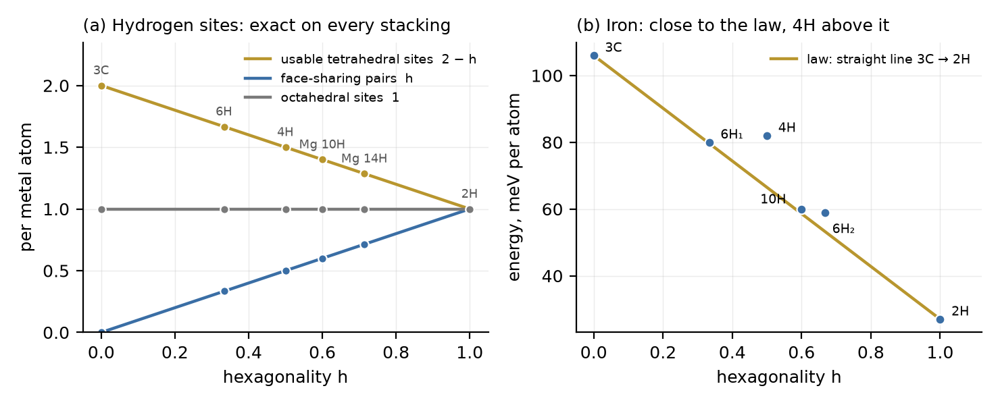

Alloys and hydrogen
Papers #67–#70 tested the Hexagonality Law on stackings of single elements and simple compounds. Engineering metals are alloys, and their most important stacking events are faults: the turning of a few layers from hexagonal to cubic or back. DICTO proposed to test the law there, starting from the titanium alloys Ti-6Al-4V (aircraft, implants, printed parts) and Ti-Nb-Zr (low-stiffness implants), and to include their spherical powders. We added four families in which cubic against hexagonal stacking is the main story: the long-period stacking (LPSO) magnesium alloys, Fe–Mn and high-entropy alloys, cobalt alloys, and the zirconium alloys of nuclear fuel cladding. A powder bed or a printed part is made of grains; inside each close-packed grain the results below apply unchanged.
Take balls of diameter a in close-packed layers A, B, C, any stacking, and let h be the share of hexagonal layers (a layer is hexagonal when the layers above and below it sit in the same position). Every stacking has 2 tetrahedral and 1 octahedral hole per ball (#66).
Proof. (i) A tetrahedral hole has its base on a triangle of one layer and its apex on a ball of the next. Two tetrahedra can share a face only across a layer i, on the same triangle, one with its apex in layer i − 1 and one in layer i + 1. For each ball of layer i there is exactly one triangle of i that lies under a ball of i + 1, and its partner below exists exactly when layer i − 1 sits where i + 1 sits, that is when layer i is hexagonal. So each hexagonal layer gives one pair per ball and each cubic layer none: h pairs per ball. (ii) The octahedral holes between two layers sit over the third position, the one neither layer uses. The holes between i − 1 and i and between i and i + 1 share a face of layer i exactly when they sit over the same position, that is when i − 1 and i + 1 coincide: again one pair per ball of each hexagonal layer. (iii) Each pair loses one of its two sites, and the pairs are disjoint (each tetrahedron has one base layer), so 2 − h remain. (iv) follows. ∎
We checked (i) and (ii) on explicit coordinates for six stackings (3C, 2H, 4H, 6H and the 10H and 14H of §3), periodic in all three directions; all counts are exact. The same run finds the tetrahedral pairs that share only an edge (centres 0.707a apart) at 6 − 3h per ball, also a straight line (computed, not proved here).
A face-sharing tetrahedral pair has its centres 0.408a apart: 1.20 Å in α-titanium (a = 2.95 Å), 1.32 Å in α-zirconium (a = 3.23 Å), far inside the 2.1 Å that hydrogen atoms in metals keep apart (Switendick's criterion), so (iii) applies to both. The edge-sharing pairs are 2.28 Å apart in zirconium (allowed) and 2.09 Å in titanium (at the limit; no claim made). Real titanium and zirconium are slightly flattened (c/a ≈ 1.59 against the ideal 1.633): the counts are exact, the distances shift by about 3%.

The Mg–Zn–Y alloys owe their strength to long-period stacking ordered phases: hexagonal magnesium with a fault every k layers, each fault making two cubic layers that collect the zinc and yttrium (Abe, Ono, Itoi, Yamasaki and Kawamura, from atom-resolved microscopy). Built from their description and checked with Jagodzinski's rule:
| Phase | fault every | stacking (one period) | h |
|---|---|---|---|
| 10H | 5 layers | ABCBCBACAC | 3/5 |
| 18R | 6 layers | ABCBCBCABABABCACAC | 2/3 |
| 14H | 7 layers | ABCBCBCBACACAC | 5/7 |
| 24R | 8 layers | ABCBCBCBCABABABABCACACAC | 3/4 |
Abe and co-workers estimate the compositions by giving each cubic layer the same composition Mg85Zn5Y10 and each hexagonal layer pure magnesium, and their microscopy shows the same cubic-layer intensity in every phase. That model is the law's form: the zinc-plus-yttrium content is 15% × (1 − h), giving their 6.0, 5.0, 4.3 and 3.7%. By the Theorem, the hydrogen-site counts of these phases are straight lines in the same h.
In the layer (ANNNI) model used in #68, a property relative to cubic stacking is X(2H) = 2(J1 + J3) per layer, and the fcc faults cost ISF = 4(J1 + J2 + J3), ESF = 4(J1 + 2J2 + 2J3), twin 2(J1 + 2J2 + 3J3) (Denteneer and van Haeringen). The law holds exactly when J2 = J3 = 0 (#68). Steels and alloys that deform by turning cubic layers hexagonal (TRIP) or by twinning (TWIP) are described by Olson and Cohen's formula, ISF = 2ρΔG + 2σ, where ρΔG is the cost per area of one hexagonal layer and σ an interface energy.
Proof. ρΔG is X(2H) per layer, 2(J1 + J3); subtract twice that from ISF = 4(J1 + J2 + J3). ∎ (An immediate consequence of the standard expressions; not claimed as new.)
| Material (data) | what was tested | result | |J2/J1| |
|---|---|---|---|
| hcp cobalt (Aas et al., four computed faults) | energy per cubic layer made: I1 16, T2 39, I2 48, E 62 meV for 1, 2, 2, 3 layers | 16.0, 19.5, 24.0, 20.7 meV: within ±20% of one constant | 0.15 |
| iron, six stackings (Tsumuraya et al., non-magnetic) | energy and volume against h | volume linear within 0.1 Bohr³ of 69 (rounding); energy close, 4H 12 meV/atom above the line | 0.17 |
| CrCoNi high-entropy alloy (Ding et al.) | ISF against ESF (the law says equal) | random −42.9 / −27.8, ordered 30 / 66 mJ/m²; 2σ ≈ 18 mJ/m² | ≈ J1-sized |
Cobalt and iron are close to the law: about four fifths of a fault's cost is the per-cubic-layer term. The 10H of iron in that set is the same stacking as the magnesium 10H of §3. In CrCoNi the local chemical order reaches across layers and the law's prediction ESF = ISF misses by 15 to 36 mJ/m².
By the Theorem (iv):
| Hydride | x | needs h ≤ |
|---|---|---|
| γ-ZrH | 1 | 1 (the count allows hexagonal) |
| δ-ZrH1.5 | 1.5 | 0.50 |
| δ-ZrH1.66 | 1.66 | 0.34 |
| ε-ZrH2, δ-TiH2 | 2 | 0 (fully cubic) |
The hydrogen-rich hydrides that embrittle zirconium cladding and titanium therefore need the metal locally at least two-thirds cubic. This agrees with the accepted mechanism, in which the metal turns from hexagonal to cubic by partial dislocations gliding on alternate basal planes (Carpenter), each leaving a fault that makes cubic layers (#67). The bound is a necessary condition only: γ-ZrH is itself cubic-stacked though the count would allow hexagonal.
Body-centred cubic metals are not close-packed stackings, and the law does not apply to them: the β phase of Ti-Nb-Zr, ferritic steels such as chromium–molybdenum steel, and the ω phase of titanium alloys. The α″ martensite of Ti-Nb-Zr is a distorted hexagonal stacking: the counts of §2 apply to it, the distances shift. The cobalt–chromium–molybdenum alloys of implants are close-packed and belong with cobalt in §4.
The law sorts alloys on one scale. Exact: the hole and hydrogen counts of every stacking, hence the bound h ≤ 2 − x for hydrides. Exact in the authors' own model: the composition of the magnesium LPSO phases. Close: the stacking energies of cobalt and iron. Broken: the faults of the high-entropy alloy CrCoNi, where Olson and Cohen's σ, twice the second-neighbour coupling, is large.
The LPSO stackings and the composition model are Abe, Ono, Itoi, Yamasaki and Kawamura's; the iron polytype energies and volumes are Tsumuraya, Watanabe and Sawaguchi's; the cobalt fault energies are Aas, Szunyogh, Evans and Chantrell's; the CrCoNi fault energies are Ding, Yu, Asta and Ritchie's; the fault model is Olson and Cohen's; the layer-model fault expressions are Denteneer and van Haeringen's; the hydride mechanism is Carpenter's; the hydrogen distance criterion is Switendick's. That face-sharing tetrahedral pairs occur around hexagonal layers is standard crystallography; the count h per ball for any stacking, the resulting bound for hydrides, and the reading of σ as 2J2 are stated here with proofs, and the proofs are short. DICTO proposed the test on alloys and the titanium cases; the further families and the computations are joint work.
Sources checked (28 October 2026). Read: E. Abe, A. Ono, T. Itoi, M. Yamasaki and Y. Kawamura, Polytypes of long-period stacking structures synchronized with chemical order in a dilute Mg-Zn-Y alloy, arXiv 1106.4944 (pp. 3–5); T. Tsumuraya, I. Watanabe and T. Sawaguchi, Origin of phase stability in Fe with long-period stacking order…, arXiv 2010.07118 v4 (Tables I–II; in the reference library); C. J. Aas, L. Szunyogh, R. F. L. Evans and R. W. Chantrell, Effect of stacking faults on the magnetocrystalline anisotropy of hcp Co, arXiv 1304.1353 (pp. 3, 7); J. Ding, Q. Yu, M. Asta and R. O. Ritchie, Tunable stacking fault energies by tailoring local chemical order in CrCoNi, arXiv 1806.00718 (pp. 9–13). Cited as given in those papers, not read: G. B. Olson and M. Cohen, Metall. Trans. A 7, 1897 (1976); P. J. H. Denteneer and W. van Haeringen, J. Phys. C 20, L883 (1987); G. J. C. Carpenter, J. Nucl. Mater. 48, 264 (1973); A. C. Switendick, Z. Phys. Chem. N.F. 117, 89 (1979). Search summaries, not read in full: arXiv 1811.12442 (δ-hydrides in Zircaloy-4); PMC10532661 (fatigue-induced fcc zirconium); Ikeda et al., Entropy 2018 (PMC7513178); Lizárraga et al., Sci. Rep. 2017 (cobalt hcp–fcc). Web searches: Mg-Zn-Y LPSO stacking sequences; stacking fault energies of CoCrNi, CoCrFeMnNi and Fe-Mn; cobalt fault energies; δ-hydride hcp to fcc mechanism. Library searched for each name above.
Data and code. Study 2026-10-28-law-in-alloys (lpso.py, hydrogen_sites.py, hea_faults.py, cobalt_faults.py, iron_polytypes.py, hydride_bound.py, fig71.py, with outputs), attached to this record. References: DICTO, The Focus (#66), DICTO DOI 10.5281/zenodo.23717687; Random Stackings and Stacking Faults (#67), 10.5281/zenodo.23718636; Real Polytypes and the Hexagonality Law (#68), 10.5281/zenodo.23719275; The Hexagonality Law in Real Materials II (#70), 10.5281/zenodo.23723565.